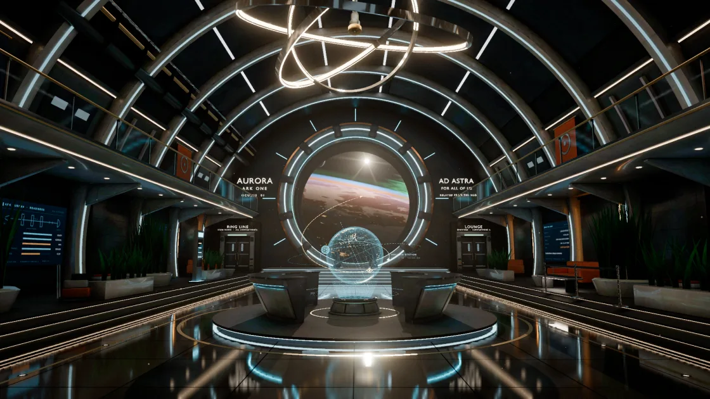
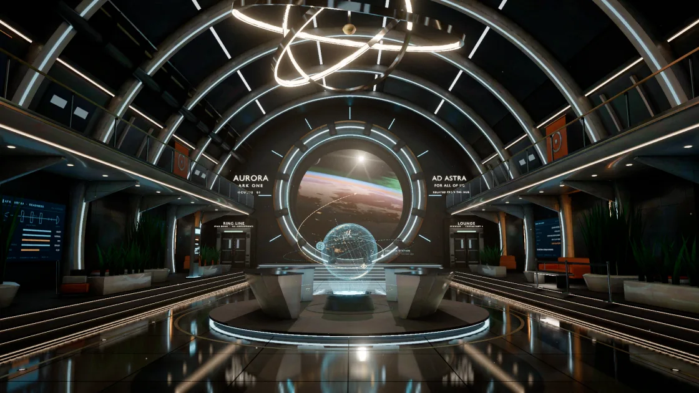
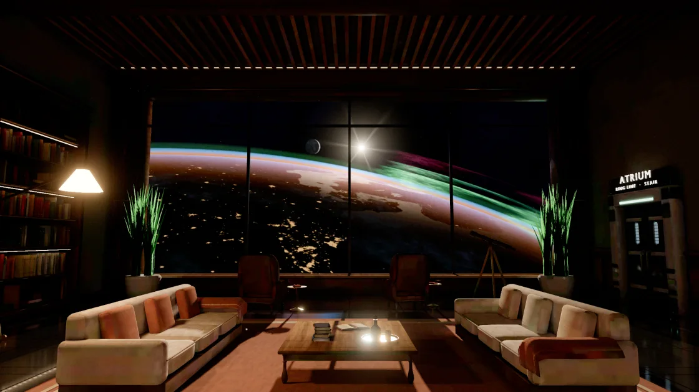
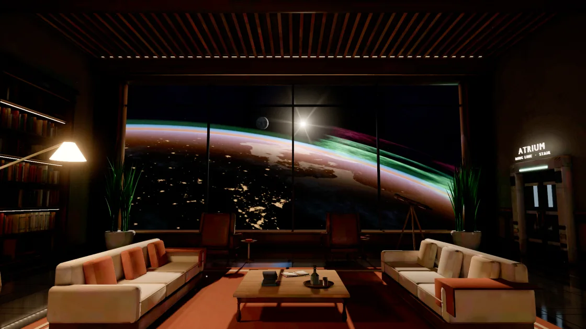
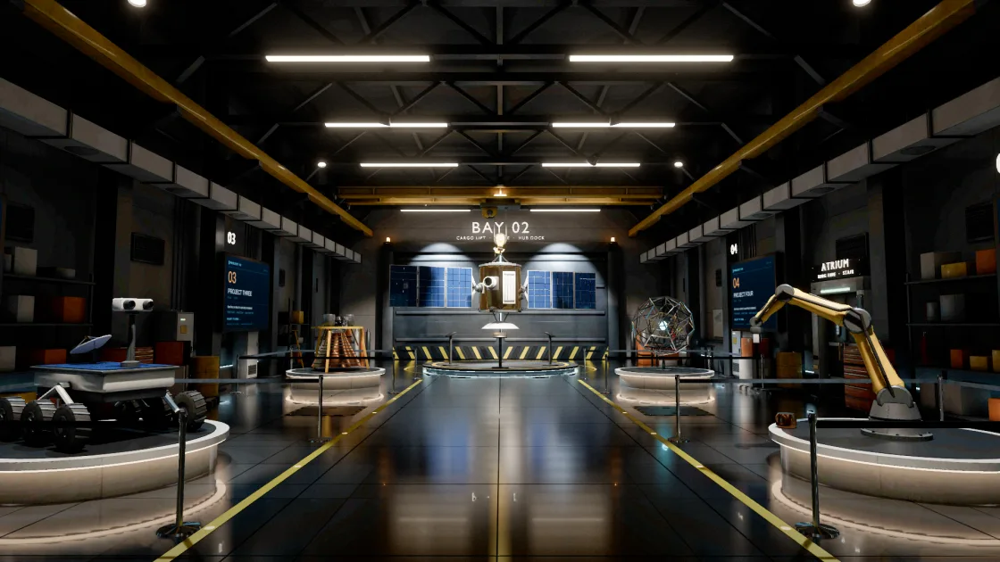
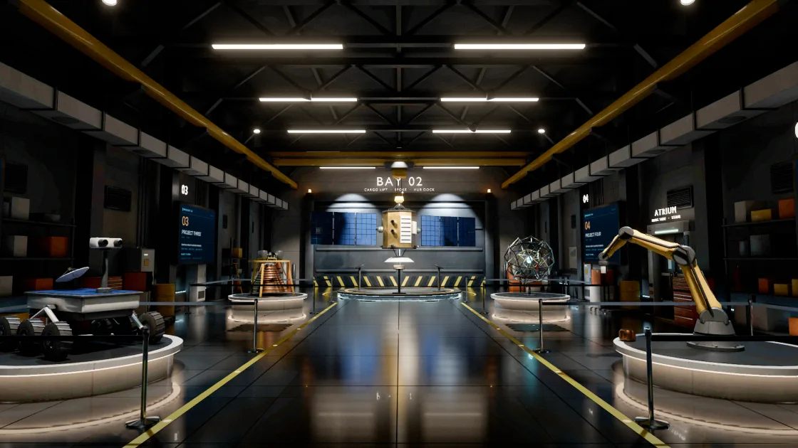
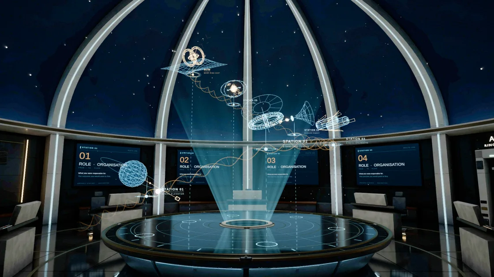
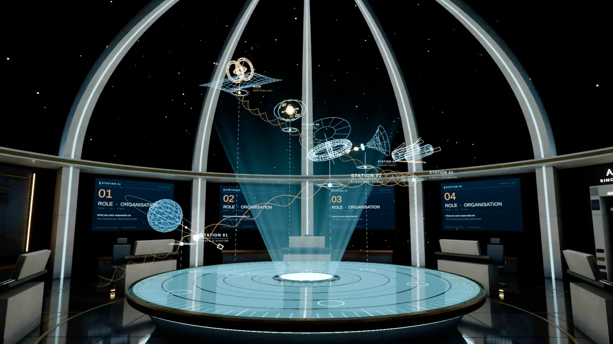
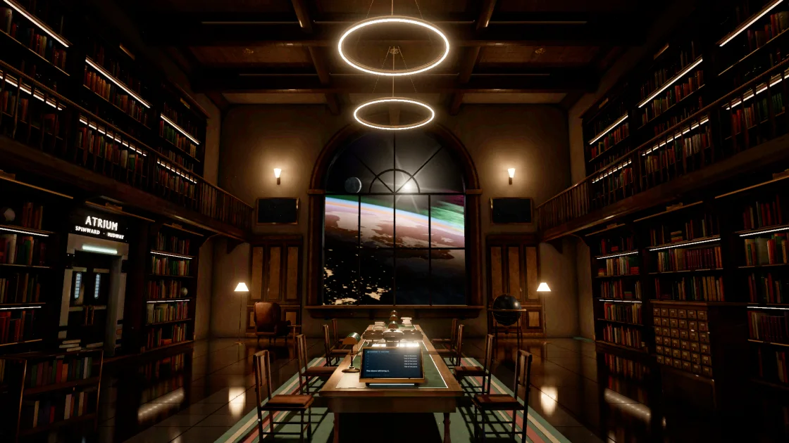
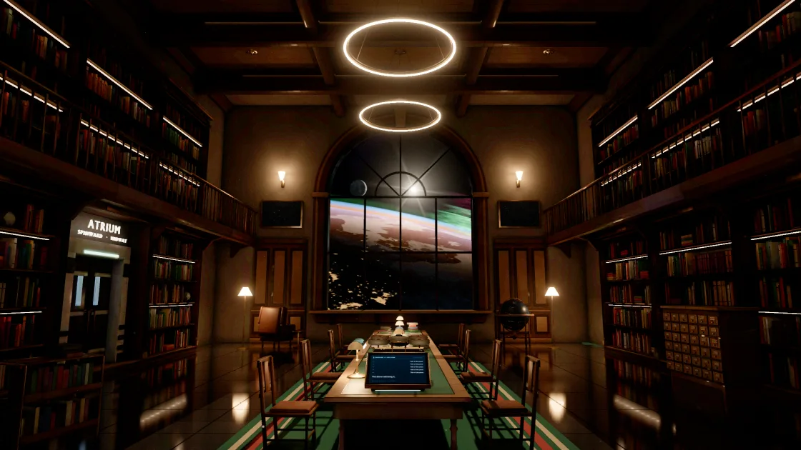

New bake first. Expand a previous view to compare the same camera, window angle and chandelier phase.

01 / Atrium
The reception desk and projector now have distinct castings, seams, baffles and fasteners. The orrery’s rings still turn independently of the fixed support.
Enter Atrium →Previous packed bake


02 / Observation Lounge
The window lights tailored cushions, shaped chair wings and bound books. Select the books on the coffee table to inspect the printed spread.
Enter Observation Lounge →Previous packed bake


03 / Fabrication Bay 02
Bridge trucks carry the hoist; harnesses, fittings and cell strings articulate the construction of the suspended satellite. These are static exhibits.
Enter Fabrication Bay 02 →Previous packed bake


04 / Navigation
Smoked chart glass carries narrow illuminated bearings. The projected stations and passing reader reflect in the glass; the brass scale and table stay put.
Enter Navigation →Previous packed bake


05 / Library
Wing chairs, shelf bindings and table atlases share the reading-room kit. Request a volume at the desk to see the live book, lit by the room and its window.
Enter Library →Previous packed bake
